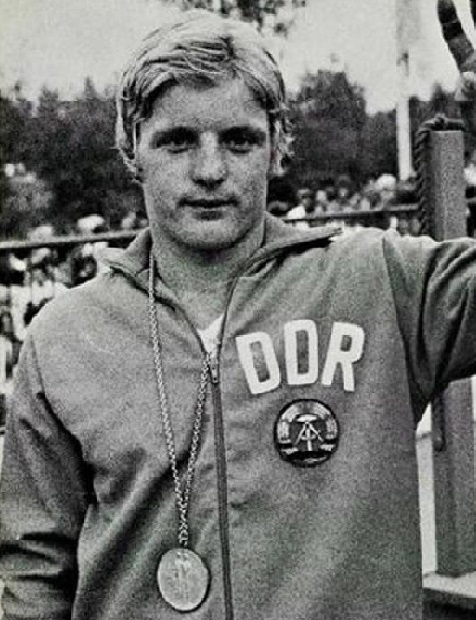
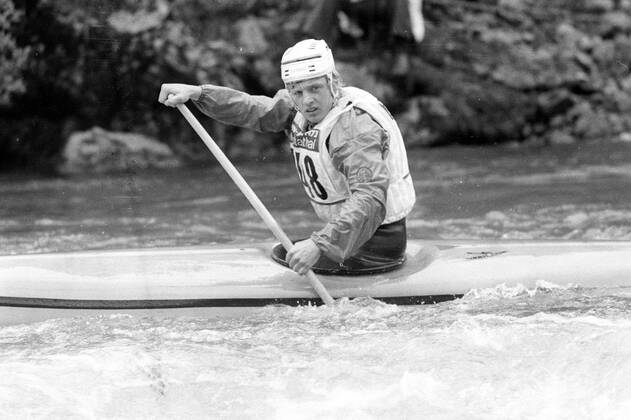

Primeiro medalhista (Reinhard Eiben)

Descrição: Foto do primeiro campeão olímpico Reinhard Eiben
Reinhard Eiben, nascido em dezembro de 1951 em Zwickau na Alemanha, foi o primeiro medalhista olímpico da modalidade Canoagem Slalom.
Reinhard Eiben conquistou a medalha de ouro nas Olimpíadas de 1972, realizadas em Munique, Alemanha. Ele competiu na modalidade de canoagem slalom na prova C-1, que consiste utilizar uma canoa (C) de apenas uma lâmina de remo, enquanto enfrenta o percurso de água com obstáculos.
Descrição: Foto do primeiro campeão olímpico Reinhard Eiben praticando a canoagem slalom
A prova de canoagem slalom nas Olimpíadas de 1972 ocorreu no Canal Olímpico de Oberschleißheim, um local projetado especificamente para a competição. Reinhard Eiben demonstrou habilidade, velocidade e precisão ao enfrentar o desafiador percurso, superando os demais competidores.
Ao conquistar a medalha de ouro, Reinhard Eiben demonstrou seu domínio da canoagem slalom e trouxe grande orgulho para a Alemanha. Essa conquista o colocou como um dos grandes nomes da canoagem alemã e o estabeleceu como uma referência na modalidade.
Embora não possua detalhes específicos sobre a performance de Reinhard Eiben nas Olimpíadas de 1972 ou sobre sua carreira após esse evento, sua conquista olímpica é um marco significativo em sua trajetória esportiva e um feito digno de reconhecimento.